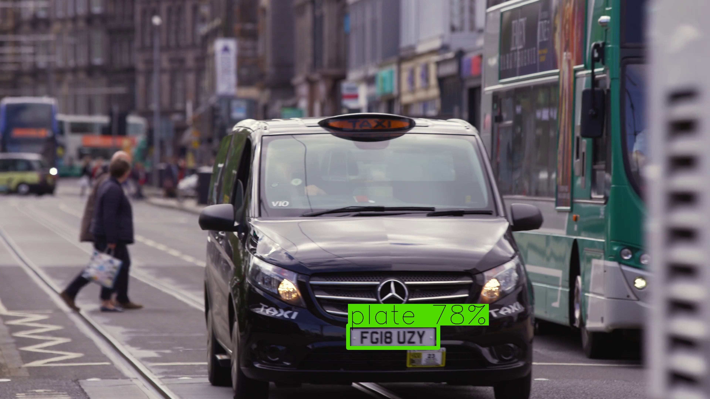
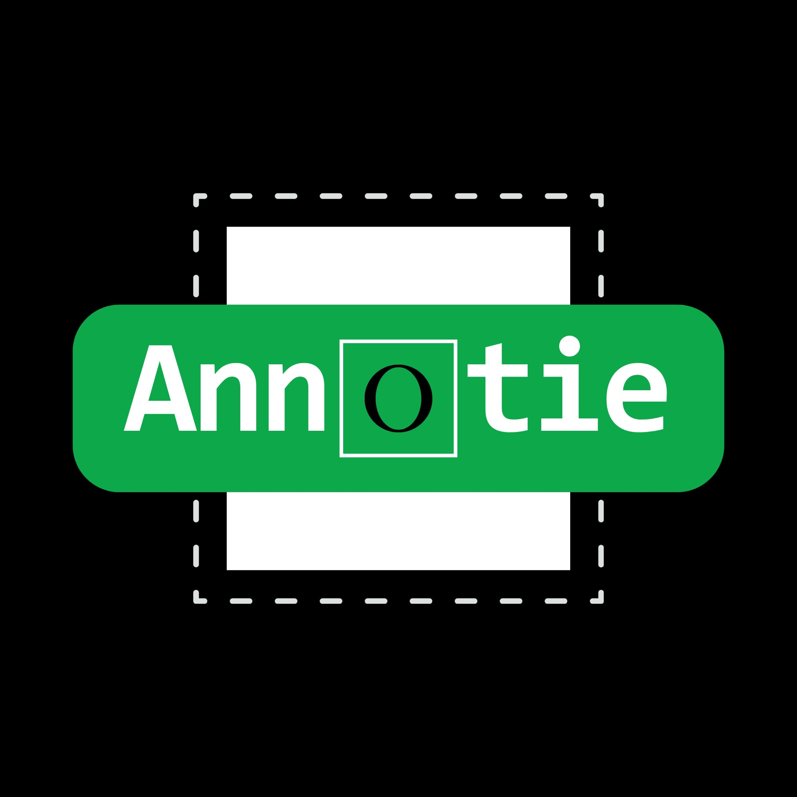
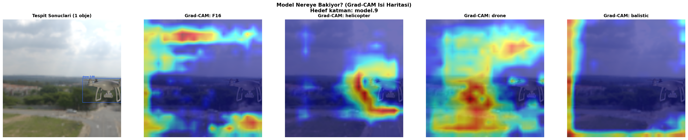
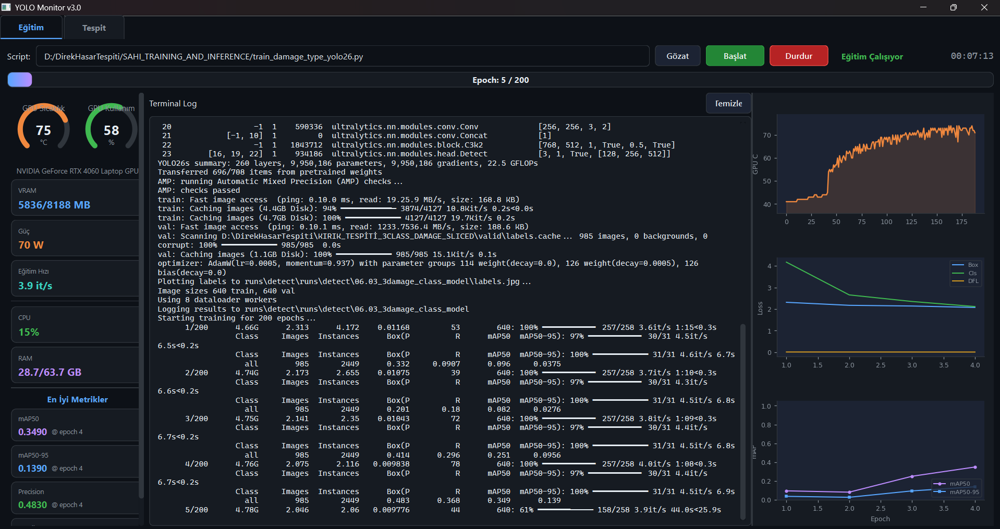

Derin öğrenme modelleri ile gerçek dünya problemlerini çözüyorum.
|
Bilgisayarlı görme (Computer Vision) ve derin öğrenme alanlarında çalışıyorum. YOLO tabanlı nesne tespit modelleri, görüntü işleme ve veri etiketleme araçları geliştiriyorum.
TEKNOFEST yarışmalarına katılıyor, askeri hedef tespiti için özel modeller eğitiyorum. Projelerimde üretimden deploy'a kadar tüm süreci yönetiyorum.
class EnesSoydan:
def __init__(self):
self.role = "AI Developer"
self.focus = [
"Computer Vision",
"Object Detection",
"Deep Learning"
]
self.stack = {
"ml": ["YOLO", "PyTorch"],
"lang": ["Python", "SQL"],
"tools": ["Docker", "Git"]
}
def build(self):
return "Something amazing"
Gerçek zamanlı otomatik plaka tanıma sistemi (ANPR). Video akışında araçların plakalarını tespit edip, OCR ile okuyan ve veritabanına kaydeden uçtan uca bir çözüm. İki aşamalı pipeline: ilk model plakayı tespit eder, ikinci model karakterleri okur.

YOLO formatında veri etiketleme aracı. Bounding box ve polygon annotation desteği, sınıf yönetimi, kolay klavye kısayolları ile hızlı etiketleme. Windows ve macOS için native build. Code signing ile dijital imzalı yükleyici.

YOLO modelinin nasıl öğrendiğini katman katman gösteren görselleştirme aracı. Feature map'ler, Grad-CAM ısı haritaları, konvolüsyon filtreleri ve t-SNE gömme analizi. Dahili uzman sistem ile model eğitim koçu.

YOLO model eğitimi ve inference süreçlerini tek panelden yöneten masaüstü uygulaması. Gerçek zamanlı GPU/VRAM/CPU izleme, eğitim logları ve toplu nesne tespiti. Eğitim ve tespit tek arayüzde.
Yeni projeler, iş birlikleri veya sadece merhaba demek için bana ulaşabilirsiniz.